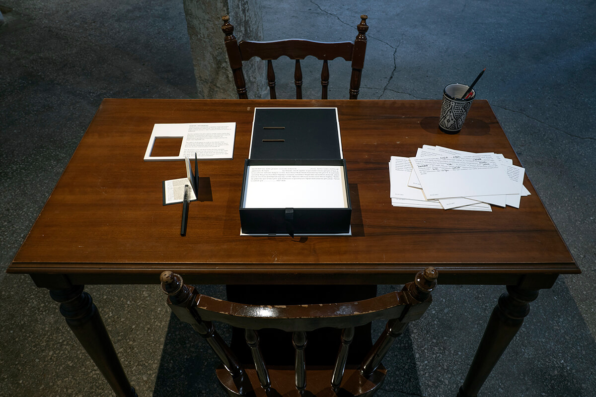
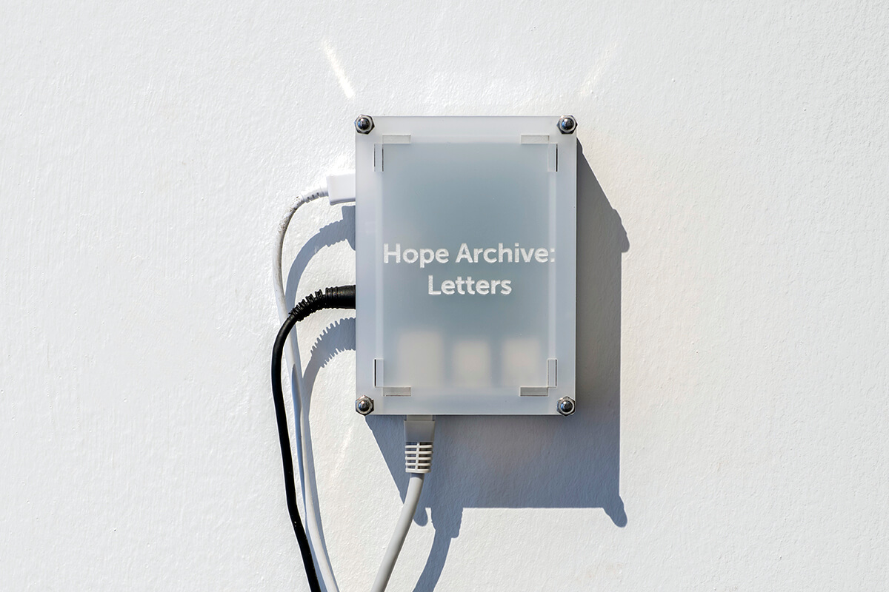
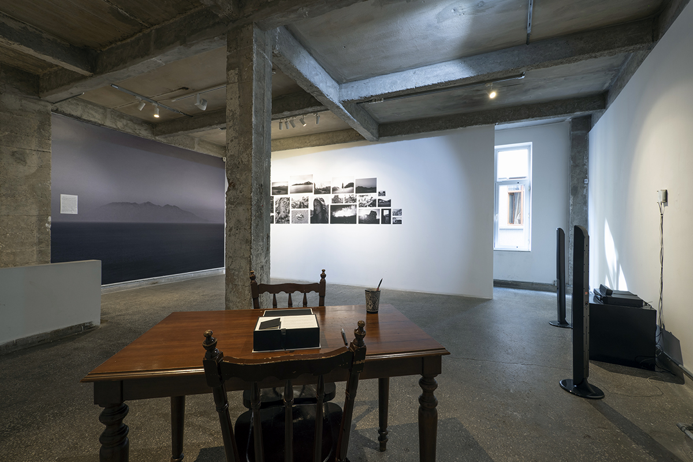

Words Don't Come Easy
Dates
October 17 — November 21, 2020
Venue
Öktem Aykut
Project website
oktemaykut.com
Words Don’t Come Easy is a presentation of recent works by Larissa Araz. Devoted to dissecting language as a system used to promote or undermine freedoms in contemporary social and political landscapes around the world, the artist’s work reveals tensions inherent in the relationship between power and linguistic structures. Looking at a number of specific cases in Turkey, Larissa Araz presents three works that reveal how language can be used as a tool to oppress marginalized groups, impose subtle and direct acts of state censorship, but at the same time how this same tool can be turned against the oppressors.
Dear Julia is an installation that, through an exploration of the Turkish-Greek island with two names (Imroz-Gökçeada), looks at a practice whereby ethnic minorities adopt Turkish second names. Hope Archive: Letters compiles intimate messages addressed to imprisoned journalists forbidden from receiving personal mail, and as a result published in Cumhuriyet newspaper. Nevermind invites visitors to play a board game about the language of power as it appears in the Turkish press’ subtle coverage of terrorist attacks.
The works occupy the space of Öktem Aykut in what appears to be a hierarchical order. Newspaper letters transformed by the artist into a continuous audio stream are present throughout the exhibition space. These are followed by a photographic installation occupying the walls and directing towards the board game waiting in the corner for anyone to dare to play. Just like the artworks that reveal the subtle hierarchies created and destroyed by language, their disposition focuses the viewer’s attention in a barely discernible manner.
In addition to its attention to hierarchies within the space, the exhibition spreads out horizontally — out of the context of a specific country and its distinctive political regime. Despite being based on recent cases of censorship and other forms of structural pressure in Turkey, the works are fragmentary, discontinuous narratives to be filled with ambiances of elsewhere. This is most pronounced in Dear Julia, an installation where neither the mysterious letter from Hülya to Julia, nor photographs of life on a remote island, come down to a particular story or a specific community. In the 138 recordings of the Hope Archive: Letters the monotonous male voice reads deeply personal messages one after the other. Only a few things are made constantly obvious — that the letters are addressed to inmates and that those inmates were persecuted for speaking truth to power. Nevermind invites visitors to fill in the blanks of redacted news stories with words from a dictionary – some are dangerous to use, others are not. The game, while based on actual cases of censorship, does not provide correct answers, nor is there an immediate finale, suggestive of the fragility of the freedom that players possess.
Photos
Barış Özçetin



